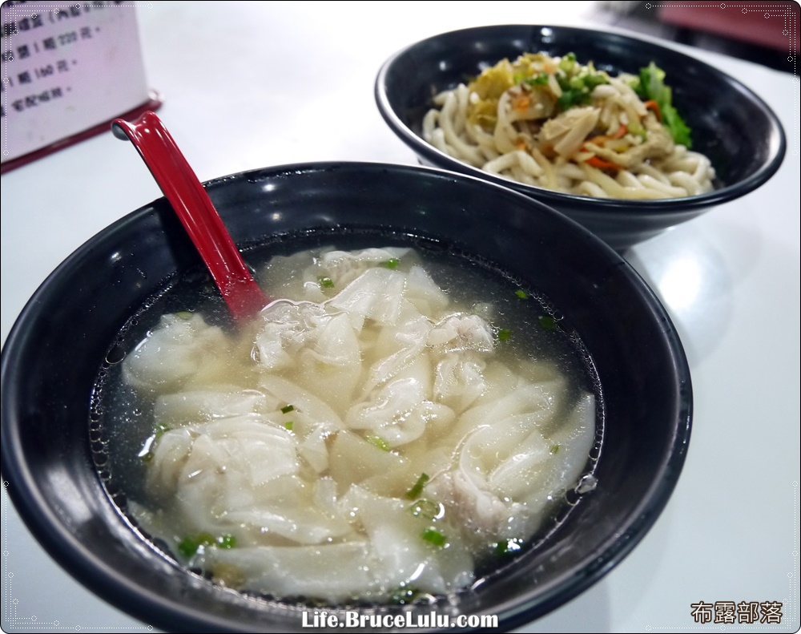

扁肉、狗麵
馬祖傳統的早餐是狗麵及餛飩湯，因為鄰近中國，許多習慣與台灣本島大不相同，連名稱都易起誤會。狗麵跟狗肉無關，是福州話中的棍麵，意思是用棍子擀出來的麵，扁肉則是餛飩的意思。
狗麵的麵條特別粗，麵粉用大骨湯汁和麵，再經過數小時揉打擀壓，相當耗真工夫。不僅口感札實，口味也跟本島的面不一樣。上桌時，粗麵條上是木耳、紅蘿蔔、榨菜、珠蔥、青菜，吃的時候麵條愈嚼愈香，慢慢散發出麥香，不僅恍然大悟，這為何是許多遊客懷念的馬祖口味。除了狗麵，經許多媒體與遊客稱讚的餛飩湯，厲害在薄可透光的餛飩皮，迎著光看這薄薄一片餛飩皮，簡直像紙一樣薄。而鮮美的肉餡加了黑胡椒，跟臺灣五香粉口味不同，家常湯麵的湯頭則是用大骨和蛤蜊慢熬，清爽鮮甜，一口餛飩一口湯，吃完滿身舒暢。
